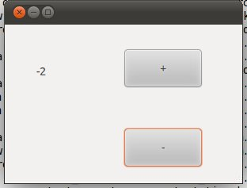
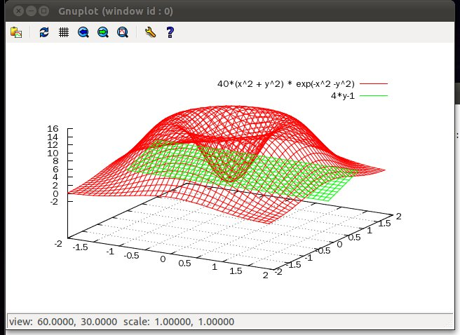

$ name=io.input(); KY Lee $ print: 'hello, ', name; hello, KY Lee
input = 'hello, file';
fh = open('test.txt', 'w');
fh.write(input);
fh.close();
fh = open('test.txt', 'r');
output = fh.read();
fh.close();
seek(offset, base) change file pointer. offset is size to move.
base is string like 'SEEK_SET', 'SEEK_CUR', 'SEEK_END' which means first, current, end of file.
tell() returns current file pointer position.
using thread;
def foo(param) {
print: param;
}
hd = thread.run(my.foo, ‘hello, thread’);
hd.join();
First argument is object which be a new thread. others are paremeter to passing.
using ipc;
using thread;
using time;
def sample_thread(num, mtx) {
print: 'thread: ${num} start';
mtx.lock();
print: 'thread: ${num} accuire mutex';
time.msleep(3000);
mtx.unlock();
print: 'thread: ${num} release mutex';
print: 'thread: ${num} end';
}
m = clone ipc.mutex;
th1 = thread.run(my.sample_thread, 1, m);
th2 = thread.run(my.sample_thread, 2, m);
th1.join();
th2.join();
It's result is
thread: 1 start thread: 2 start thread: 1 accuire mutex thread: 1 release mutex thread: 2 accuire mutex thread: 1 end thread: 2 release mutex thread: 2 end
mutex is scope object, so it could be used like below.
a = mutex.clone();
a {
fh.write('exclusive write');
}
wait can get relative mutex which handle critical section.
and it can get msec to determine waittime. If it's omitted, wait infinitely.
If you run below example, wait_thread wake up after 1 sec.
using time;
def wait_thread(cond) {
print: 'thread: wait';
cond.wait(3000);
print: 'thread: wakeup';
}
def signal_thread(cond) {
time.msleep(1000);
cond.signal();
}
c = clone ipc.cond;
th1 = thread.run(my.wait_thread, c);
th2 = thread.run(my.signal_thread, c);
th1.join();
th2.join();
using ipc;
using thread;
using time;
def inc_thread(key) {
sem = clone ipc.semaphore;
sem.set(key, 10);
for a in [1..10]: {
print: 'produced...';
sem.inc();
time.msleep(1000);
}
}
def dec_thread(key) {
sem = clone ipc.semaphore;
sem.set(key, 10);
for a in [1..10]: {
sem.dec();
print: 'consumed...';
}
}
th1 = thread.run(my.inc_thread, 1000);
time.msleep(3000);
th2 = thread.run(my.dec_thread, 1000);
th1.join();
th2.join();
It's result is
produced... produced... produced... produced... consumed... consumed... consumed... consumed... produced... consumed... produced... consumed... produced... consumed... produced... consumed... produced... consumed... produced... consumed...It shows that consumed... occurs after produced...
create socket and return.
$ sock = socket.create();
send data by socket.
$ sock.send('hello, world');
receive data from socket.
$ msg = sock.recv();
close socket
$ sock.close();
connect to ip, port.
$ sock = socket.create();
$ sock.connect('127.0.0.1', 8080);
socket bind.
$ sock.bind(80);
socket listen
$ sock.listen();
accept client and return client socket.
$ client = sock.accept();
Here is echo example.
svr = socket.create();
svr.bind(80);
svr.listen();
do {
try {
client = svr.accept();
msg = client.recv();
client.send(msg);
}
catch {
}
} while(true);
If you run above code and try below in another console,
$ using socket; $ sock = socket.create(); $ msg = io.input(); Hello, socket $ sock.send(msg); $ print: sock.recv(); Hello, socket
Like above, echo server is worked.
You can build multiplexing, multithread server by using select, thread module.
IOCP, async socket and epoll server will be added soon.
def server {
sock = socket.create();
sock.bind(8080);
sock.listen();
while true: {
fd = select.select([sock.get()], [], [], 1000);
if fd[0] == [sock.get()]: {
new_cl = sock.accept();
str = new_cl.recv();
new_cl.send(str);
sock.close();
new_cl.close();
return;
}
}
}
$ using alg;
$ a = [1,2,3, {4:5, 6:7}, (8,0)];
$ alg.traverse(a, %c{print: argv[0];});
[ 1,2,3,{ 4:5,6:7 },( 8,0 ) ]
1
2
3
{ 4:5,6:7 }
( 4,5 )
4
5
( 6,7 )
6
7
( 8,0 )
8
0
$
for a in a.begin():
{
function(a());
}
But, you can set end iterator.
$ using alg;
$ a = [1..10];
[ 1,2,3,4,5,6,7,8,9,10 ]
$ alg.for_each(a.begin(), a.end(), %c{ print: argv[0]; });
1
2
3
4
5
6
7
8
9
10
$
$ a = [1..10];
[ 1,2,3,4,5,6,7,8,9,10 ]
$ alg.for_each_iterator(a.begin(), a.end(), %c{ argv[0](argv[0]()*2); });
$ print: a;
[ 2,4,6,8,10,12,14,16,18,20 ]
$
$ using alg; $ a = [1..10]; [ 1,2,3,4,5,6,7,8,9,10 ] $ b = alg.find(a.begin(), a.end(), 5); listiter <0x98acc38> $ print: b(); 5 $ b = alg.find(a.begin(), a.end(), 20); listiter <0x98ad2e8> $ print: b(); uncaugted exception: orca.iter out of range recent call-stack trace >> root (/usr/local/lib/orca/alg.orca 237) return true;
$ a = [11..20];
[ 11,12,13,14,15,16,17,18,19,20 ]
$ b = alg.find_if(a.begin(), a.end(), %c{ return argv[0] % 7 == 0; });
listiter <0x98ae668>
$ print: b();
14
find_if calls function to every item from begin to end. If function return true, return that item's iterator.
$ a = [1..10]; [ 1,2,3,4,5,6,7,8,9,10 ] $ s = a.begin().next(3); listiter <0x98afc60> $ e = a.end().prev(2); listiter <0x98af870> $ print: s(), ':', e(); 4:9 $ alg.erase(s, e); $ print: a; [ 1,2,3,9,10 ]
$ a = [1,2,3,2,7,2]; [ 1,2,3,2,7,2 ] $ alg.remove(a.begin(), a.end(), 2); $ print: a; [ 1,3,7 ]
$ a = [10, 3, 2, 20, 32];
[ 10,3,2,20,32 ]
$ alg.remove_if(a.begin(), a.end(), %c{ argv[0] < 10; } );
$ print: a;
[ 10,3,2,20,32 ]
$ a = [1..10]; [ 1,2,3,4,5,6,7,8,9,10 ] $ b = []; [ ] $ alg.copy(a.begin(), a.end(), b.begin()); $ print: b; [ 1,2,3,4,5,6,7,8,9,10 ] $ alg.copy(a.begin(), a.end(), alg.find(b.begin(), b.end(), 5)); $ print: b; [ 1,2,3,4,1,2,3,4,5,6,7,8,9,10,5,6,7,8,9,10 ] $
$ a = [1..10]; [ 1,2,3,4,5,6,7,8,9,10 ] $ b = []; [ ] $ alg.copy_n(alg.find(a.begin(), a.end(), 5), 3, b.begin()); $ print: b; [ 5,6,7 ]
$ a = [2, 3, 3, 3, 2, 7, 4]; [ 2,3,3,3,2,7,4 ] $ alg.count(a.begin(), a.end(), 3); 3
$ a = [2,3,3,3,2,7,4];
[ 2,3,3,3,2,7,4 ]
$ alg.count_if(a.begin(), a.end(), %c{ return argv[0] % 2 == 0; });
3
$ a = [1, 2, 3, 2, 2];
[ 1,2,3,2,2 ]
$ b = ['1', '2', '3', '2', '2'];
[ '1','2','3','2','2' ]
$ alg.equal(a.begin(), a.end(), b.begin(), %c{ return argv[0] == argv[1].integer(); });
true
$ a = [1,1,2,2,3,3,4,4]; [ 1,1,2,2,3,3,4,4 ] $ alg.equal_range(a.begin(), a.end(), 1); false $ alg.equal_range(a.begin().next(2), a.begin().next(4), 2); true
$ a = %[x%3|x<-1~10]; [ 1,2,0,1,2,0,1,2,0,1 ] $ alg.replace(a.begin(), a.end(), 0, 3); $ print: a; [ 1,2,3,1,2,3,1,2,3,1 ]
$ a = [1..10];
[ 1,2,3,4,5,6,7,8,9,10 ]
$ alg.replace_if(a.begin(), a.end(), %c{ return argv[0]%3 == 0; }, 'x');
$ print: a;
[ 1,2,'x',4,5,'x',7,8,'x',10 ]
$ a = [1..10];
[ 1,2,3,4,5,6,7,8,9,10 ]
$ b = [];
[ ]
$ alg.transform(a.begin(), a.end(), b.begin(), %c{ return argv[0]*10; });
$ print: b;
[ 10,20,30,40,50,60,70,80,90,100 ]
Above example is multiply 10 to all items and insert them to b;
transform(begin, end, begin2, des, function) is similar with above but it has two sources. begin~end and begin2~.
It inserts the results of function(item1, item2) to dest iterator.
$ a = [1..10];
[ 1,2,3,4,5,6,7,8,9,10 ]
$ b = %[x|x<- 100~ ];
[ 100,101,102,103,104,105,106,107,108,109, ... ]
$ using alg;
$ c = [];
[ ]
$ alg.transform(a.begin(), a.end(), b.begin(), c.begin(), %c{ return argv[0] + argv[1]; });
$ print: c;
[ 101,103,105,107,109,111,113,115,117,119 ]
Above example sum up each item from a and b, then insert it to c.
List b is set-builder form list and it's length is infinite. But range is just a.begin() ~ a.end() because source one has finite range.
without type.regex() programmer can make regular expression from constatant string only. (like r'[0-9]+'). but type.regex(str) allow to make dynamically.
And, members of type is type type of each data type. So, you can use those for type check.
$ 1.type == type.int; true $ 'string'.type == type.string; true $ 1.34.type == type.int; false $
str = ''' <?xml version="1.0"?> <tag_a> <tag_b attr1="value1" attr2="value2">text of tag b</tag_b> </tag_a> ''';
this xml string is convered to
{ '$info':'xml version="1.0"',
'tag_a':{
'tag_b':{ '$attrs':{ 'attr1':'value1','attr2':'value2' },'$text':'text of tag b' }
}
}
It is based on xml path structure, one node (tag_a) has it's name key and It's value is child nodes.
And there is special nodes whose name is $attrs, $text, $info,
$attrs is attributes in node, $text is tag value and $info is document information.
basic rule is like above, but orca map doesn't allow multiple key values. but xml node could be repeated. so if there is same key value in xml string, orca xml decode it as tuple.
Let's see below example,
str = ''' <?xml version="1.0"?> <tag_a> <tag_b attr1="value1" attr2="value2">text of tag b</tag_b> <tag_b>text of tag b 2nd</tag_b> </tag_a> ''';
{ '$info':'xml version="1.0"',
'tag_a':{ 'tag_b':( { '$text':'text of tag b 2nd' },
{ '$attrs':{ 'attr1':'value1','attr2':'value2' },'$text':'text of tag b' } )
}
}
like above, multiple tag_b nodes are represented as tuple.
after decoding, You can find node lists in tag_a like this,
ret = xml.decoding(str);
ret['tag_a'].keys();
and you can access child nodes like this,
ret['tag_a']['tag_b'][1]['$text']
search in xml data structure may be provided at later release.
and You can encoding from orca structure to xml string by xml.encoding
xml.encoding(ret) <? xml version="1.0" ?><tag_a><tag_b >text of tag b 2nd</tag_b><tag_b attr1=value1 attr2=value2 >text of tag b</tag_b></tag_a>
but, this result is not easily readable.
so, use xml.beutify,
<? xml version="1.0" ?>
<tag_a>
<tag_b >
text of tag b 2nd
</tag_b>
<tag_b attr1=value1 attr2=value2 >
text of tag b
</tag_b>
</tag_a>
than you can get indented result string.
str = "{ 'a':3, 'b':6, 'c':[1,2,3, { 'a':{'b':'c'}, 'd':[1,2,3], 'd':3 }, 4,5,6] }";
ret = json.decoding(str);
this result is
{ 'a':3,'b':6,'c':[ 1,2,3,{ 'a':{ 'b':'c' },'d':( [ 1,2,3 ],3 ) },4,5,6 ] }
It's almost same shape but 'd' had been repeated so it's value is tuple like ([1,2,3], 3)
and now, if you want to see value of 'c'
you can access it like
print: ret['c'];
and like xml module, search in json structure will be provided at later release.
{'a':3,'b':6,'c':[1,2,3,{'a':{'b':'c'},'d':[1,2,3],'d':3},4,5,6]}
and threre is another encoding function beutify which make more readable result.
{'a':3,
'b':6,
'c': [1,
2,
3,
{'a': {'b':'c'},
'd': [1,
2,
3],
'd':3},
4,
5,
6]}
$ using os; $ os.run(‘ls’);
This prints out file lists.
And for convenience, It could be like below.
$ ; ls -al
If semi-colon is in front of string. It is same as or.run(string)
;ls -al is equal to os.run('ls -al');
And It supports call-back reference by using caller.
$ def __cout__; $ ; ls -al total 2924 drwxrwxrwx+ 10 MYHOME 없음 0 Dec 1 14:56 . drwxrwxrwx+ 24 MYHOME 없음 0 Nov 27 11:01 .. drwxrwxrwx+ 6 MYHOME 없음 0 Dec 1 02:11 .svn -rw-rw-rw- 1 MYHOME 없음 8 Nov 8 17:26 BUILD_NUMBER -rw-rw-rw- 1 MYHOME 없음 18007 Nov 8 17:26 COPYING …. $ print: my.__cout__; [ 'total 2924 ','drwxrwxrwx+ 10 MYHOME 없음 0 Dec 1 14:56 . ','drwxrwxrwx+ 24 MYHOME 없음 0 Nov 27 11:01 .. ','drwxrwxrwx+ 6 MYHOME 없음 0 Dec 1 02:11 .svn ','-rw-rw-rw- 1 MYHOME 없음 8 Nov 8 17:26 BUILD_NUMBER ','-rw-rw-rw- 1 MYHOME 없음 18007 Nov 8 17:26 COPYING …
like above, If there is __cout__ object in caller object,
print results are appended in it.
$ print: os.getenv(‘PATH’);
This return the PATH of current shell.
$ print: os.cwd(); /root/curr
$
$ os.mkdir('newdir');
$
$ os.cd('newdir');
$ print: os.ls('.');
[ ]
$
$ print: os.ls('.');
[ ]
$ os.mkdir('newdir');
$ print: os.ls('.');
[ './newdir' ]
$ os.rename('newdir', 'renamed_dir');
$ print: os.ls('.');
[ './renamed_dir' ]
$
$ print: os.ls('.');
[ './file_a' ]
$ os.copy('file_a', 'file_b');
$ print: os.ls('.');
[ './file_b','./file_a' ]
$
$ print: os.ls('.');
[ './file_a' ]
$ os.remove('file_a');
$ print: os.ls('.');
[ ]
$
$ os.cd('/usr');
$ print: os.ls('.');
[ './tmp','./include','./kerberos','./local','./bin','./games','./sbin','./share','./lib','./src','./etc','./libexec' ]
$
$ os.cd('/usr');
$ print: os.ls('.');
[ './tmp','./include','./kerberos','./local','./bin','./games','./sbin','./share','./lib','./src','./etc','./libexec' ]
$
$ print: os.isexists('/etc');
True
$ print: os.isexists('/etc/passwd');
True
$ print: os.isexists('/if_not_exist');
False
$
$ print: os.isfile('/etc/passwd');
True
$
$ print: os.isfile('/etc');
False
$
$ print: os.isfile('/if_not_exist');
False
$
$ print: os.isdir('/etc');
True
$ print: os.isdir('/etc/passwd');
False
$ print: os.isdir('/if_not_exist');
False
$
$ os.cd('/etc');
$ for a in os.dir_iterator('.'):
* print: a;
*
./printcap
./terminfo
./rc2.d
./bash_completion.d
...
$ for a in os.dir_traverser('/etc/yum'):
* print: a;
*
/etc/yum/pluginconf.d
/etc/yum/pluginconf.d/blacklist.conf
/etc/yum/pluginconf.d/whiteout.conf
/etc/yum/pluginconf.d/refresh-packagekit.conf
$
$ os.write('foo.txt', 'hello, file');
$ print: os.read('foo.txt');
hello, file
$ print: os.file_size('foo.txt');
11
$ print: os.last_write_time('foo.txt');
2010-11-14T15:16:51
system module is for checking system info.
It provides below interfaces.
$ system.cpu_n(); 4 $ system.free(); 1422434304 $ system.memory(); 2002993152 $ system.os(); Linux version 2.6.35-22-generic (buildd@rothera) (gcc version 4.4.5 (Ubuntu/Linaro 4.4.4-14ubuntu4) ) #33-Ubuntu SMP Sun Sep 19 20:34:50 UTC 2010 $ system.version(); 0.5
math module is wrapper of c math library.
It provides below interfaces.
acos, asin, atan, atan2, ceil, cos, cosh, exp, fabs, floor, fmod, frexp, ldexp, log, log10, modf, pow, sin, sinh, sqrt, tan, tanh
Interface and spec of each member is same as libm.
But, some of above function in c has two output (one by return and the other by parameter pointer) but, orca has no pointer.
so, in that case return values are returned as one tuple.
You can see each example at tests/test_math.orca.
operator module is used for lisp module and other functional programming.
It has +, -, *, /, %, <, <=, >, >=, ==, !=, ||, && members.
These members are composed by special characters. So, you should refer them with ' ' like below,
$ operator.'+'(3, 4); 7 $ operator.'-'(3, 4); -1 $ operator.'*'(3, 4); 12 $ operator.'%'(3, 4); 3 $ operator.'<='(3, 4); true
These function is infix operator. So, if you want to apply them to more parameters at once,
use fun.reduce or fun.apply.
sort module is interface for sort container (list or tuple)
It make sorted container from input a and return it.
original container is not changed.
$ using fun;
$ ret = fun.map([1,2,3], %c{ return argv[0] * 2; } );
$ print: ret;
[ 2,4,6 ]
above code works like [ 1 * 2, 2 * 2, 3 * 2]
$ using fun;
$ print: fun.reduce([1,2,3,4,5], %c{ return argv[0] + argv[1]; });
15
argv[0] are accumulative result and argv[1] is each member of list so, above code works like ((((1 + 2) + 3) + 4) + 5)
def mul(a, b)
{
return a * b;
}
mul10 = fun.bind_1st(..mul, 10);
$ print: mul10(2); 20 $ print: mul10(2.4); 4.8
new mul10 function which binds 10 to mul is created.
bind_2nd, bind_3rd are similar with bind_1st but bind arg to 2nd and 3rd paremeter
and fun.bind_nth(fun, arg, n)
bind arg to n 'th paremter of fun.
def main : window
{
my.attr['wh'] = (800, 600);
def box : vbox
{
def menu : menubar
{
file = [ 'open', %c{
name = dialog.fileopen(upper('main'));
str= os.read(name);
upper('box').hs.edit.attr['text'] = str;
},
'save', %c{
str= upper('box').hs.edit.attr['text'];
name = dialog.filesave(upper('main'));
os.write(name, str);
},
'exit', %c{
upper('main').quit();
}
];
my.push_back('file', file);
}
def hs : scroll
{
def edit : text
{
}
}
}
}
Above example is simple notepad application.
If you do this with Win32 api or GTK API, It should be more complex and bothering. If you use RAD tools for it,
Additional representation layer and real code has some gap so it lose intuition.
But, orca gui module is different. All things in window has it's own object in code. and That objects have same relation.
Real object in gui has same logical object in code.
Lets imagine main window has only one 'ok' button.
That button is included in window.
def main : window
{
def box : vbox
{
def ok : button
{
my.attr['text'] = 'ok';
}
}
}
This window is written like above. ok : button is included in main : window (actually, there should be additional container object in window. GTK aspects)
If you launch above main window like this,
my.main.make(); my.main.show();
main window with ok button appears.
make interface makes window with it's sub objects.
show interface show result window. result window is like below.
In this time, We don't define action of ok button. So, Nothing is happened when you click ok button.
Let's see another example which have click event action.
def main : window
{
my.attr['xy'] = (50, 20);
my.attr['wh'] = (300, 200);
def box : fixed
{
def counter : label
{
my.attr['xy'] = (40, 50);
my.attr['text'] = 0;
}
def plus : button
{
my.attr['xy'] = (150, 30);
my.attr['wh'] = (100, 50);
my.attr['text'] = '+';
my.event['clicked'] = %c{
upper('box').counter.attr['text'] += 1;
};
}
def minus : button
{
my.attr['xy'] = (150, 130);
my.attr['wh'] = (100, 50);
my.attr['text'] = '-';
my.event['clicked'] = %c{
upper('box').counter.attr['text'] -= 1;
};
}
}
}
Above example, Window have counter label, plus button which increase counter and minus button which decrease counter. We use box : fixed contaiter. So, we define position attribute my.attr['xy'].
And then, GUI event could be defined by set my.event attribute.
On above code, my.event['clicked'] has assigned by lambda code. And then, If you click plus button, GUI make clicked event and it invokes assigned lambda code %c{ upper('box').counter.attr['text'] += 1; }.
upper is util.upper interface which traverse owner link and find name is euqal. So, upper.('box').counter means main.box.counter. And lambda code increase counter text by 1. so label text of counter is changed.
Result window is like this,

This simple but impressive exmaple shows that all the object in the window and there relation and events can move to code exactly.
Below gui objects are supported in current version.
These modules maintain time duration & time point.
datetime is timepoint which has years, months, days, hours, minutes, seconds and microseconds. It points out exact time point.
Internally, datetime is made up by module date + module time
module date is time point(date point).
module time is time duration "from 00:00:00 AM"
dateduration is the interval of two date. (like 2 moth ago, 2 years later)
time point is exact time so time points couldn't be added to other time point.
but It could be substracted from another time points and result is integer which means interval of two timepoints.
If time points is datetime, interval scale is microsecond.
and if time points is date, interval scale is day.
Time duration is amount of time. so it could be added or be substracted to another time duration.
and It could be multiplied or divided by integer.
If you add (or sub) time point and time duration, It make new time point which is moved from original time point to amount of time duration.
Let's see detail interface of each module.
time means time durtiaon from 00:00:00 AM. Time of day.
value is composed by hour, minute, second, microsecond.
$ print: a = time.clone('01:02:03.4');
01:02:03.400000
$ print: a.hour;
1
$ print: a.minute;
2
$ print: a.second;
3
$ print: time.clone('01:02:03') + time.hours(3) + time.microseconds(1000);
04:02:03.001000
It's a duration, so each field has no limit.
(That means, minutes could be more 60)
And time could be added or substracted wich integer.
In this case, integer value means microseconds.
$ print: a; 01:02:03 $ print: a + 1234; 01:02:03.001234 $
time object could be compared to each other.
$ using time;
$ a = time.clone('01:02:03');
$ b = time.clone('01:02:04');
$ print: a > b;
false
$ print: a == b;
false
$ print: a < b;
true
$ using date;
$ print: a = date.clone('2000-01-02');
2000-01-02
$ print: a.year, ' ', a.month, ' ', a.day;
2000 1 2
$ print: date.today(); 2010-11-02
And dateduration is date duration (no date point).
this dateduration object could be added or substacted to each other.
and It could be multiplied or diveded with integer.
but devide means devide each value of attributes (years, monthes, days, weeks) and
remainder is lost.
And add, sub by integer is possible. In this case integer means days.
$ using date; $ print: date.years(1); 1 years $ print: date.months(2); 2 months $ print: date.days(3); 3 days $ print: date.weeks(4); 4 weeks $ print: a = date.years(3) - date.months(4) + date.weeks(2) - date.days(7); 3 years -4 months 2 weeks -7 days $ print: a *= 2; 6 years -8 months 4 weeks -14 days $ print: a /= 3; 2 years -2 months 1 weeks -4 days $ print: a += 1; 2 years -2 months 1 weeks -3 days $ print: a -= 2; 2 years -2 months 1 weeks -5 days
and now, you can add (or sub) date and dateduration then make new date.
$ print: date.clone('2000-01-01') + date.months(2);
2000-03-01
substraction between two dates means intervals in days scale.
$ using date;
$ print: date.clone('2000-01-01');
2000-01-01
$ print: date.today() - date.clone('2000-01-01');
3958
$ print: date.clone('2000-01-01') + 100;
2000-04-10
$ print: date.today() + time.time_of_day(); 2010-11-02T23:26:12.827502
datetime could be made up by initial string like below, and datetime have internal interface date() and time() which return
date or time value of datetime.
now() means current datetime.
$ print: datetime.clone('2000-01-02 03:04:05');
2000-01-02T03:04:05
$ print: a = datetime.now();
2010-11-02T23:21:56.685685
$ print: a.date(), ' ', a.time();
2010-11-02 23:21:56.685685
date, time duration could be added or substarcted to datetime.
$ print: a = datetime.clone('2000-01-01 03:04:05');
2000-01-01T03:04:05
$ print: a + date.years(10) - date.months(30) + time.hours(100) - time.minutes(2000);
2007-07-03T21:44:05
substraction between two datetime means interval of them with microseconds scale.
and add (or sub) of integer to datetime means increase(or decrease) of microsecond value.
$ print: a = datetime.clone('2000-01-01 03:04:05');
2000-01-01T03:04:05
$ print: a + 1000000 * 3600 * 24 * 10;
2000-01-11T03:04:05
$ print: a - 10;
2000-01-01T03:04:04.999990
$ print: datetime.clone('2010-01-01 03:04:05') - a;
87672:00:00
And aditionally,
time.msleep(msec)
is another static function which sleep in msec milliseconds.
a = gnuplot.clone();
a.clear();
a.add('x^2', %[(x, x*x)|x<-1~1000]);
a.add('2*x^2', %[(x, x*x*2)|x<-1~1000]);
a.set('line');
a.plot('pause 1');
Result graph image is like below,
3D graph plot needs 3 data at one point. So, It's differ from 2D plot interface.
sbf= %[(x, y, 40*(x*x + y*y)*math.exp(-(x*x) - (y*y)))|x<--2~2:0.1, y<- -2~2:0.1];
sbf2= %[(x, y, 4*y-1)|x<- -2~2:0.1, y<- 0~1:0.1];
gnuplot.sadd('40*(x^2 + y^2) * exp(-x^2 -y^2)', sbf, true);
gnuplot.sadd('4*y-1', sbf2, true);
gnuplot.set('grid');
gnuplot.set('line');
gnuplot.splot('pause 1');
Above example show z = 40*(x^2 + y^2)*exp(-x^2-y^2) and z = 4*y-1
Result graph images are like below,

In these example, only SBF lists are used as source data. But, you can use norman lists which are setup by your algorithm or your own module.
orca remoted 8080 ## dist server start
$ using remotec;
$ c = remotec.clone('127.0.0.1', 8080);
$ print: c.ping();
true
$
from now on, If you get or set member of c, It works from remote machine !!
(It made by .attr, .attr_last, .attr=)
let's see detail example.
$ c.hello = 'hello, remote'; $ print: c.hello; hello, remote
It's very simple but It doesn't work from local machine.
c.hello = 'hello, remote' make root.hello object to remote server.
print: c.hello read root.hello from remote server and print it.
cascaded path could be possible.
$ c.foo.bar = 10; $ print: c.foo.bar; 10 $
using remotec;
def sum(...)
{
return argv[0] + argv[1];
}
c = remotec.clone('127.0.0.1', 8080);
c.sum = my.sum;
print: c.sum(10, 20);
If you run this script file, It returns 30.
You set root.sum from remote node and call it and get result from that.
But, in this code, client is blocked while result is calculated by remote.
so If you want non-block working, Do it like below
using remotec;
def sum(...)
{
return argv[0] + argv[1];
}
c = remotec.clone('127.0.0.1', 8080);
c.sum = my.sum;
c.sum.__nowait__(10, 20);
print: c.is_done(100);
print: c.pop_obj();
If you add virtual member __nowait__ after function sum, remotec call sum and non-blocking returned.
and you can check if remote call is done by call is_done(msec).
isdon(msec)
check if remote call is done. In case of void parameter, It return true/false immidiatly.
if msec is provied as parameter, It wait remote call to msec millisecond.
After remote call is done, you can get result by calling pop_obj()
Above usages are different to other languages because It access remote object like same way of local object.
and It can move object to remote node with compiled byte codes and call it directly.
so you can use it like below with remote_do()
using remotec;
c = remotec.clone('127.0.0.1', 8080);
c.remote_do: 10, 20, %c{
return argv[0] + argv[1];
};
print: c.is_done(100);
print: c.pop_obj();
this codes return 30.
remoted(...) call last argv item with other argv items as paremeters.
In this example, last argv item is lambda function. It's remote call but very similar with local procedure call.
In nowdays, Only orca supports above easy and flexible way of remote call processing.
dist module supports distribute processing environment with remoted lists.
using remoted;
using remotec;
using dist;
using random;
using time;
random.seed();
port = random.integer(1000) + 8000;
print: '# port: ', port;
parallel do {
server = remoted.clone();
server(port);
}
parallel do {
server = remoted.clone();
server(port+1);
}
parallel do {
server = remoted.clone();
server(port+2);
}
time.msleep(200);
dist.add('127.0.0.1', port);
dist.add('127.0.0.1', port+1);
dist.add('127.0.0.1', port+2);
r = dist.dist_do(10, 20, %c{ return argv[0] + argv[1]; });
print: r.is_done(100);
print: ret = r.pop_obj();
if ret != 30:
throw test.dist, 'dist_do failed';
list = [1..100];
rs = dist.dist_for(list, %c{ return argv[0] * argv[0]; } );
print: rs;
if rs != %[ x*x | x<-1~100 ]:
throw test.dist, 'dist_for failed';
print: '## now quit: ', dist.shutdown();
return 'OK', my;
belows are result of above.
30 is return as result of dist_do,
And you can see square value of each item of [1..100] is returnend.
# port: 8985 ## dist server start ## dist server start ## dist server start true 30 [ 1,4,9,16,25,36,49,64,81,100,121,144,169,196,225,256,289,324,361,400,441,484,52 9,576,625,676,729,784,841,900,961,1024,1089,1156,1225,1296,1369,1444,1521,1600,1 681,1764,1849,1936,2025,2116,2209,2304,2401,2500,2601,2704,2809,2916,3025,3136,3 249,3364,3481,3600,3721,3844,3969,4096,4225,4356,4489,4624,4761,4900,5041,5184,5 329,5476,5625,5776,5929,6084,6241,6400,6561,6724,6889,7056,7225,7396,7569,7744,7 921,8100,8281,8464,8649,8836,9025,9216,9409,9604,9801,10000 ]
[Machine 192.168.0.2] $ orca dfsd /home/lynix 8080 [Machine 192.168.0.3] $ orca dfsd /home/orca 8080
You can launche file system node like above.
and now, mount them by fs.mount(path, ip, port) like below,
fs.mount('/mnt/node_a', '192.168.0.2', 8080);
fs.mount('/mnt/node_b', '192.168.0.3', 8080);
after that,
data = fs.read('/mnt/node_a/foo/bar.txt');
fs.write('/mnt/dir/file1', 'hello, file');
fs.write('/mnt/dir/file2', 'hello, file');
fs.write('/mnt/dir/file3', 'hello, file');
...
fs hashing path and distributes it to some file server node.
$ ret = lisp.compile('(+ 3 (* 4 2))');
( [ [ +,3,[ *,4,2 ] ] ],{ 'F':false,'T':true,'car':car <0x9d82350>,'cdr':cdr <0x9d823d8>,'do':do_list <0x9d82460>,'list':list <0x9d824e8> } )
$ lisp.execute(ret);
11
lisp module supports defun, macro, let, if, cond and etc...
$ lisp.execute(lisp.compile('(defun (sum x y) (+ x y) )(sum 4 4)'));
8
$ lisp.execute(lisp.compile('(defmacro (addy x) `(+ ,x y)) (let ((y 20)) (addy 10))'));
30
$ lisp.execute(lisp.compile('( cond ((>= -3 20) (* 3 10)) ((< 20 10) 3) (T "error") )'));
error
And, lisp code can access orca object. But default namespaces are io and io.print. So, before you use it, register namespace by (using path) statement.
$ lisp.execute(lisp.compile('(print "hello\n")'));
hello
lisp.execute(lisp.compile('(using math) (math.sin (/ 30.0 90.0))'));
0.327195
And lisp module supports UDS (user define statement)
So, You can use lisp codes in orca source code.
def foo := %lisp{
(+ argv0 argv1)
};
print: r = .foo(3, 4);
Above example prints 7. Paremeters that pass to lisu UDS are named as argvN.
You can see more test examples at test/test_lisp.orca and can see lib/lisp.orca as lisp module source code made by parse statement.
using cpp;
def sum := %cpp{
// this is cpp code
return argv[0] + argv[1];
};
print: my.sum(10, 20);
If you make above code and run by orca, At first module loading (with compile) native codes in %cpp{ } are compiled by native compiler (gcc or VC++)
Then output library is loaded in orca.
$ ./orca tt
cpp external module compile: g++ -shared -o /tmp/lib__tt_1_context.so /tmp/__tt_1_context.cpp -I${ORCA_HOME}/include/orca -L${ORCA_HOME}/lib -lorca
/usr/bin/ld: cannot find -lorca
30
Then it prints 30.
look at the above compile messages.
orca made /tmp/__tt_1_context.cpp file from the cpp UDS of tt.orca. Then invoked native compiler (gcc) to build shared library /tmp/lib__tt_1_context.so.
Result dynamic modules are saved in /tmp/ so you have to add that path to LD_LIBRARY_PATH
There are somethings to do before use cpp UDS. But if you set up one time, making native object will be very easy after that.
The parameters passed to cpp UDS object are vector Below code is __tt_1_context.cpp. It's generated by orca cpp module from tt.orca. When you make your own cpp code, Sometimes you have to include header or setup library path. Like above, define #include, #cflags and #ldflags in UDS statement. cpp module copy #include line to top of generated file.
And use clfags and ldflags as compile time option. In windows envrionment, cpp UDS objects are compiled by vscompile.bat. sh module is the wrapper of shell script for using at orca's UDS. lru interface manage lru list.
It manage lru by (key, value) pair.
Inserts k, v pair into lru list.
v is dest. object which is maintained by lru list
k is key which to find v is in or not in.
victimize interface remove oldest one from lru list.
If k is exist in lru list, return v and move it to first of lru list.
If not, return nil.
size interface return current lru list size.
Belows are result.orca
It sets up session_test and check logged. This example is available in
http://orca-lang.or.kr/cgi-bin/login.orca
http://orca-lang.or.kr/cgi-bin/result.orca
You can find native code in udf which is defined at %cpp{ }
#include "orcaObject.h"
class __tt_1_context : public orcaObject
{
public:
orcaData udf(orcaVM* vm, vector
At that case,
def sum := %cpp{
#include
That batch file is made up for Visual c++ express edition 2008. If you use another compiler or there are some problem to build, change that batch file.
sh
It use os.run interface and pass parameters as argv[N]
Below example is making sh UDS object tgzip which make tar ball of input directory.
def tgzip = %sh{ tar -xcvf argv[0] argv[1] };
my.tgzip('out.tar.gz', '/home/lynix/out');
httpd
This is simple http server.
httpd(path, port)
This call launch http server with path as http root and port as http listen port.
This module use fs module for file management so dfsd and cached could be used for hosting.
current it supports get, post and multipart post request.
and if URI is *.orca file, It launch thread and execute it.
and if URI is *.osp (orca server page), It call osp module to parsing it and launce thread and execute that.
currently, sample test page is http://orca-lang.or.kr:8080/hello.osp
base64
This is base64 encoding & decoding module.
base64.enc(str)
do base64 encoding of str.
base64.dec(str)
do base64 decoding of str
$ using base64;
$ print: a = base64.enc('12345678');
MTIzNDU2Nzg=
$ print: b = base64.dec(a);
12345678
stopwatch
It's simple stopwatch object.
start()
Init timer.
elapse()
return elapsed time as microsecond.
$ using stopwatch;
$
$ stopwatch.start();
$ print: stopwatch.elapse();
15007541
$
$ print: stopwatch.elapse();
24143768
$
lap(msg)
Prints out elapsed time in console.
$ sw = stopwatch;
$ sw.start();
$ sw.lap('lap 1: ');
lap 1: 17 sec, 71 ms, 530 us
$ sw.lap();
20 sec, 287 ms, 624 us
$
title(msg)
Set up header message of timer.
After setup, this message is printed when lap() is called.
title returns stopwatch object.
$ using stopwatch;
$ sw1 = stopwatch.clone();
$ sw1.title('[sw1]');
$ sw2 = stopwatch.clone();
$ sw2.title('[sw2]');
$
$ sw1.start();
$ sw2.start();
$ sw1.lap();
[sw1]5 sec, 792 ms, 273 us
$ sw2.lap();
[sw2]5 sec, 855 ms, 888 us
$ sw1.lap('lap1');
[sw1]lap122 sec, 128 ms, 36 us
$ sw2.lap('lap2: ');
[sw2]lap2: 32 sec, 976 ms, 62 us
$
scope_start, scope_end
It supports scope statement
scope_start is same as start, scope_end is same as lap.
$ sw1.title('scope statement test:') {
* root.time.msleep(1000);
* }
*
scope statement test:999 ms, 425 us
$
orca
This module is for access low-level aspects of orca.
current version provides load() and unload() interface.
load(name)
loads module in runtime.
str = argv[0];
orca.load(str);
unload(name)
unload module in runtime. It's purpose is reload dynamic pages from http, osp module.
util
This module provides simple utilities.
lock(obj)
It make lock by lang.id() of obj.
below example lock to obj and make critical section.
util.lock(obj) {
obj.push_back(1);
...
}
lru
lru.insert(k, v)
lru.victimize()
lru.touch(k)
lru.size()
$ using util.lru;
lru <0x858c230>
$ a = 'string a';
string a
$ lru.insert(a.id(), a);
$ b = 'string b';
string b
$ lru.insert(b.id(), b);
$ c = 'string c';
string c
$ lru.insert(c.id(), c);
$ lru.dump();
string: string c
string: string b
string: string a
$ lru.victimize();
$ lru.dump();
string: string c
string: string b
run
You can run orca module in shell promt. but you can't run member of module directly in shell prompt.
That means
$ orca foo # possible
$ orca foo.bar # impossible
But if you use run module,
argv[0] is path of object which will be called and argv[1:] is paremeters
so you can use like below,
nil of last line is return value.
$ orca run io.print hello, orca
hello,orca
nil
cgi
cgi module is made by libcgi and supports basic CGI programming.
This module is beta phase so It will have many changes in interface.
First, describe interface and show basic example.
get_param(name)
return request parameter.
$ var = cgi.get_param('key');
$ print: var;
value
urlenc(src)
Encoding input string as URL format.
$ print: cgi.urlenc("if a+3 > 4: print('overflow');");
if+a%2B3+%3E+4%3A+print%28%27overflow%27%29%3B
urldec(src)
Decoding URL format as original string.
$ print: cgi.urlenc("if a+3 > 4: print('overflow');");
if+a%2B3+%3E+4%3A+print%28%27overflow%27%29%3B
$ print: cgi.urldec('if+a%2B3+%3E+4%3A+print%28%27overflow%27%29%3B');
if a+3 > 4: print('overflow');
htmlenc(src)
encoding symbol as html escape character.
redirect(url)
redirect document.
header {
cgi.redirect('another.orca');
}
header
cgi.header has session and cookie object.
cgi.header object is used as scope statement.
In it's scope, session and cookie setting is possible.
cgi.header {
cgi.header.session('session_name_a');
...
cgi.redirect('doc.orca');
}
header.session
session manager object
header.session.add(name, value)
add new variable in session.
session.add('new_key', 'new_value');
header.session.set(name, value)
change session variable value.
session.set('new_key', 'changed_value');
header.session.get(name)
return session variable value.
session.get('new_key');
header.session.remove(name)
remove session variable.
session.remove('new_key');
header.session.exist(name)
check whether session variable is exist.
session.exist('new_key');
header.session.destroy()
destroy the session
session.destroy();
cgi.header.cookie
cookie manager object.
header.cookie.get(name)
get cookie value
cookie.get('cookie');
header.cookie.set(name, value)
set cookie value
cookie.set('cookie', 'value');
html
html text generation object.
html.puts(msg)
prints text in html document.
html.puts('text in html');
html.tag
make new tag in html document.
first parameter is tag name and others are attributes.
using cgi.html.tag;
tag('html') {
tag('head') { }
tag('body') {
...
}
}
html.ctag
Like , make closed tag
using cgi.html.tag;
using cgi.html.ctag;
tag('html') {
tag('head') { }
tag('body') {
ctag('img', 'src=img.jpg');
}
}
html.br
print
in html docuemnt.
using cgi.html.tag;
using cgi.html.ctag;
using cgi.html.br;
tag('html') {
tag('head') { }
tag('body') {
ctag('img', 'src=img.jpg');
br();
}
}
html.text(msg)
make new font tag.
First parameter is text which be printed.
Second parameter is font name.
Third parameter is size.
using cgi.html.tag;
using cgi.html.ctag;
using cgi.html.br;
tag('html') {
tag('head') { }
tag('body') {
ctag('img', 'src=img.jpg');
br();
text('simple text', 'gulim', 10);
}
}
Simple login example
Here is simple login example.
Below file is login.orca.
It reads name from user and process login.
For more detail on source,
If form is submitted, It called again and makes new session session_test and sets session variable
logged as 1.
Then redirect to result.orca.
#!/bin/orca
using cgi;
using cgi.header;
using cgi.header.session;
using cgi.header.cookie;
using cgi.html.tag;
using cgi.html.ctag;
using cgi.html.br;
using cgi.html.puts;
using cgi.html.text;
cgi.header {
session('session_test');
if (cgi.get_param('logout')): {
session.destroy();
}
if (cgi.get_param('login')): {
session.add('logged', '1');
session.add('name', cgi.get_param('username'));
cookie.set('key', 'value');
cgi.redirect('result.orca?option=false');
return;
}
}
cgi.html {
tag('html') {
tag('head') {
tag('title') {
puts('cgi session example');
}
}
tag('body') {
tag('form', ["action='login.orca'", "method='get'"]) {
puts: 'username';
ctag('input', "type='text' name='username'");
ctag('input', "type='submit' name='login' value='Click to
login'");
}
}
}
}
If logged is 1, prints more detail informations.
If not logged, prints "not logged in"
#!/bin/orcash
using cgi;
using cgi.header;
using cgi.header.session;
using cgi.header.cookie;
using cgi.html.tag;
using cgi.html.ctag;
using cgi.html.br;
using cgi.html.puts;
using cgi.html.text;
cgi.header {
session('session_test');
}
cgi.html {
tag('html') {
tag('head') {
tag('title') {
puts('cgi session example');
}
}
tag('body') {
if (session.exist('logged')): {
puts: 'logged';
br();
puts: 'session.name =', session.get('name');
br();
puts: 'cookie.key =', cookie.get('key');
br();
puts: 'param.option =', cgi.get_param('option');
br();
tag('form', ["action='login.orca'", "method='get'"]) {
ctag('input', "type='submit' name='logout'
value='Click to logout'");
}
}
else: {
puts: 'not logged in';
}
}
}
}
mysql
mysql is external module so you have to build it from extlib.
It requires mysql to be installed before build.
After build it, move libmysql.so to LD_LIBRARY_PATH and
load module by using statement.
using mysql;
mysql.connect(ip, id, pw, db)
connect to mysql server
mysql.update(query)
execute update Qeury
mysql.execute(query)
execute select Query
return value is mysql result iterator.
so you can access result value by call it.
Here is simple example.
using mysql;
m = mysql.clone();
m.connect('127.0.0.1', argv[0], argv[1], 'test');
print: m.update('drop table t1');
print: m.update('create table t1 (code int)');
for i in [1..5]:
print: m.update('insert into t1 values(${i})');
print: ret = m.execute('select * from t1');
for a in ret:
print: a();
$ orca tt root passwd
0
0
0
0
0
0
0
mysqlresult <0x8766028>
( '1' )
( '2' )
( '3' )
( '4' )
( '5' )